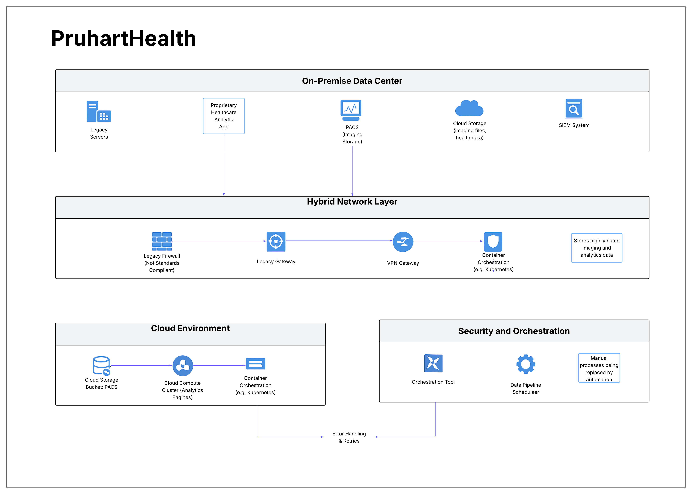

Project objective
Correct latency, compatibility, unauthorized access, fragmented monitoring, and manual workflow problems across on-premises and AWS systems.
What I produced
- Recommended AWS Direct Connect as the primary path with VPN retained for backup.
- Replaced the legacy perimeter concept with a next-generation firewall and stronger identity federation.
- Centralized cloud and on-premises visibility through CloudWatch, CloudTrail, Security Hub, and GuardDuty.
- Automated imaging-data movement, analytics jobs, scheduling, retries, notifications, and EKS scaling.
Key decisions
- Use redundant connectivity so performance improvements do not eliminate resilience.
- Apply MFA, least privilege, federation, and Zero Trust principles consistently across the hybrid boundary.
- Automate routine data movement and error handling while escalating only exceptions.
- Scale resources with workload demand instead of maintaining fixed peak capacity.
Primary + backupDirect Connect with VPN resilience
Central monitoringCloud and on-premises telemetry
Automated workflowsScheduling, retries, and dynamic scaling
Validation and analysis
- Linked each proposed change to a specific audit or performance finding.
- Explained expected effects on latency, incident response, workflow delays, and resource usage.
- Defined primary and backup communication paths and centralized observability.
What I would improve next
- Add explicit HIPAA control mapping and encryption-key ownership.
- Define Direct Connect failover tests and service-level objectives.
- Create workflow state diagrams and operational dashboards for each automated pipeline.